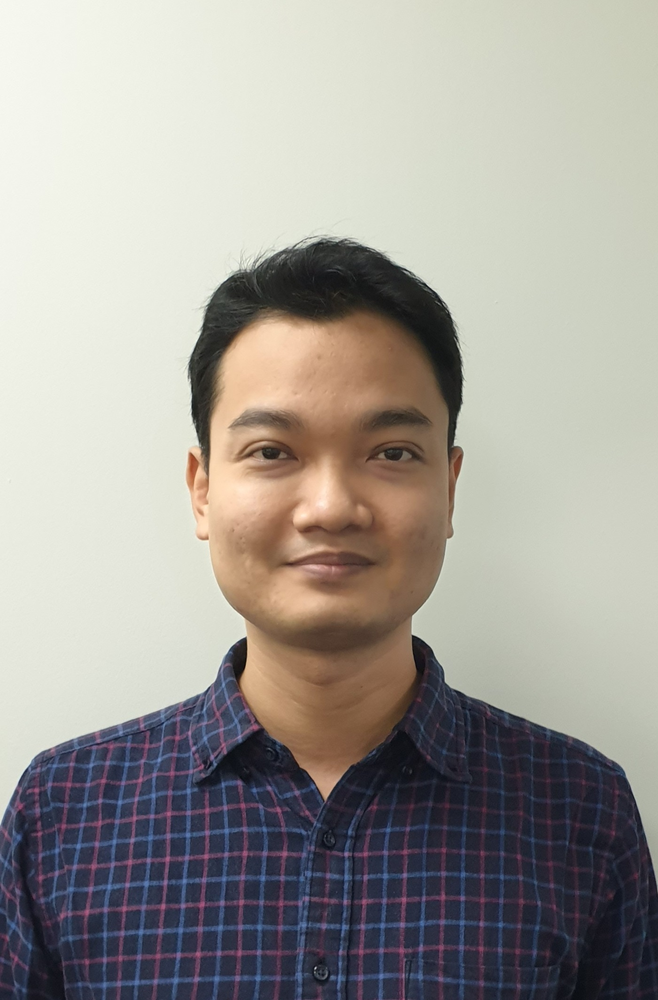

Pham Duc Dung

Summary
My name is Pham Duc Dung.
I graduated from Hanoi University of Science and Technology, where I studied Software Engineering.
I am a dedicated and hard-working individual, always eager to learn and embrace new challenges.
I am seeking opportunities to enhance my skills and gain practical experience in software engineering to contribute effectively to projects and team success.
Education
- Engineer of Software Engineering at Hanoi University of Science and Technology (2006-2011)
Work Experience
- Software Engineer at Toshiba Software Development Vietnam Limited(2011-2014)
- Software Engineer at Japan Computer Standards Joint Stocks Company (2014-2016)
- Bridge System Engineer at Nippon Steel Metal Products Vietnam Limited (2016-2020)
- IT Dept. Manager at Nippon Steel Metal Products Vietnam Limited (2020-2022)
- Product Owner at Cryptopie Labo Limited (2022-2025)
Skills
- Problem-Solving
- Comunication
- Adaptability
- Critical Thinking
Awards
- Most Valuable Person of the Year at Cryptopie Labo Limited (2023)
Certificates
- Fundamentals of Engineering - ITSS
- Japanese-Language Proficiency Test N2 Level - Japan Foundation and JEES
- Software Product Management Specialization - University of Alberta
- Foundation of User Experience (UX) Design - Google
- Professional Scrum Product Owner - Scrum.org
Other